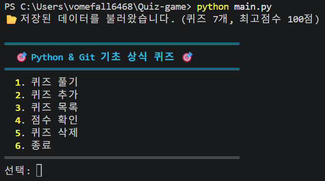
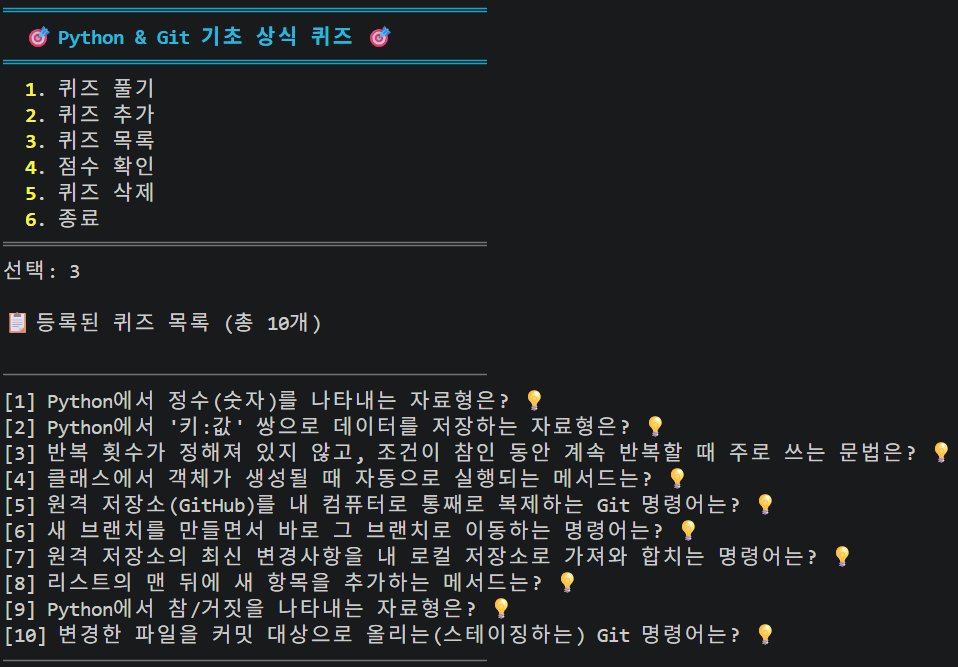
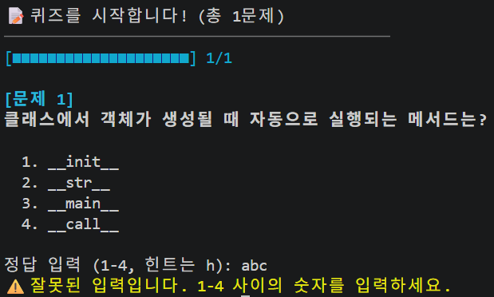

주요 기능
📝 퀴즈 풀기
문제 수를 골라 무작위 순서로 풀고 100점 만점으로 채점합니다.
➕ 퀴즈 추가
문제, 선택지 4개, 정답, 힌트를 입력해 나만의 문제를 만듭니다.
📋 퀴즈 목록
등록된 문제를 확인합니다. 힌트가 있는 문제는 💡로 표시됩니다.
🏆 점수 확인
최고 점수와 최근 5회 게임 기록을 보여줍니다.
🗑️ 퀴즈 삭제
번호를 골라 삭제하고, 확인 단계에서 취소할 수 있습니다.
🛟 백업과 복구
저장 전에 자동 백업하고, 파일이 손상되면 원하는 백업으로 복원합니다.
실행 화면






웹에서 맛보기
실제 게임은 Python으로 동작합니다. 이 화면은 기본 퀴즈 7문제를 브라우저에서 체험해 보는 소개용 버전입니다.
코드 구조
Quiz
quiz.py
문제 1개: 출력, 정답 확인, 저장 형식 변환
QuizGame
quiz_game.py
게임 전체: 메뉴, 입력 검증, 점수, 저장/불러오기
BackupManager
backup.py
백업 생성, 백업 목록, 복구 로그
개발 과정
기능마다 브랜치를 만들어 작업하고 main에 병합했습니다.
- feature/play 퀴즈 풀기
- feature/random 랜덤 출제
- feature/count 문제 수 선택
- feature/hint 힌트와 점수 차감
- feature/delete 퀴즈 삭제
- feature/history 게임 기록
- feature/ui 색상과 진행률
- feature/backup 백업과 복구